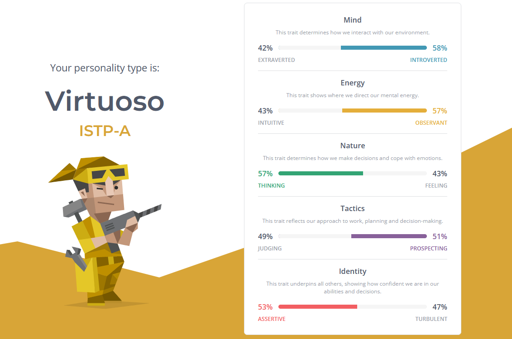

Myers-Briggs Test
Integer eu ante ornare amet commetus vestibulum blandit integer in curae ac faucibus integer adipiscing ornare amet.

Student ID: s3816170

My initial interest into computers was around the time I was introduced to the game platform 'Steam', which was when I transitioned from console gaming to computer gaming. PC gamers tend to obsess over the latest and highest spec parts, and I was no different. As you can probably imagine, this was difficult as student, so instead I had to find the best "bang for buck" parts within budget. Through researching and the whole process of building my first PC, I familiarised myself with computer hardware and what each part's role was and how they interacted with one another, but at that point, it was just a hobby. It wasn't until later on when I came across the television series 'Mr Robot' that I developed a deeper interest in IT, and more specifically cyber security, and towards the end of my schooling when I started thinking about courses and careers, that I began to consider a profession in the IT field. I have yet to decide on a specific profession, but I have interests in cyber security, data science and UX/UI design. Currently, I have some basic experience in a few coding languages including Python, HTML, CSS and SQLite and web-based tools such as Figma, all of which I expect to build on as I progress through my course.
I chose to study at RMIT due to it's reputation for practical, industry-based learning as well as the abundant facilities and support that is available to students. I also had friends who were already students at RMIT who recommended it. The campus location also appealed to me for the social aspect of student life as it is right in the heart of the Melbourne CBD.
During my studies at RMIT, I expect to not only learn about and develop hard skills such as coding/programming in various languages, computer hardware/software, networking, etc but also the soft skills including communication, working in a team and problem solving. I believe this would adequately prepare me for when I begin my career in IT.

Find an advertisement showing what you believe to be your ideal job. This may require several years of experience, and hence be something that you must work towards, rather than something that you are ready for now, or will be able to fill as soon as you graduate. There are various ways to search for IT jobs, including websites like {seek.com.au}. You should include the following information.A description (in your own words) of the position, and particularly what makes this position appealing to you.
A plan describing how you will obtain the skills, qualifications and experience required for the position, building on those you have now. This need not be greatly detailed, (and will probably change significantly over time anyway), but try to be as specific as you can.
Integer eu ante ornare amet commetus vestibulum blandit integer in curae ac faucibus integer adipiscing ornare amet.

Integer eu ante ornare amet commetus vestibulum blandit integer in curae ac faucibus integer adipiscing ornare amet.

Integer eu ante ornare amet commetus vestibulum blandit integer in curae ac faucibus integer adipiscing ornare amet.
Integer eu ante ornare amet commetus vestibulum blandit integer in curae ac faucibus integer adipiscing ornare amet. Integer eu ante ornare amet commetus vestibulum blandit integer in curae ac faucibus integer adipiscing ornare amet. Integer eu ante ornare amet commetus vestibulum blandit integer in curae ac faucibus integer adipiscing ornare amet. Integer eu ante ornare amet commetus vestibulum blandit integer in curae ac faucibus integer adipiscing ornare amet. Integer eu ante ornare amet commetus vestibulum blandit integer in curae ac faucibus integer adipiscing ornare amet.
Integer eu ante ornare amet commetus vestibulum blandit integer in curae ac faucibus integer non. Adipiscing cubilia elementum integer. Integer eu ante ornare amet commetus.
Integer eu ante ornare amet commetus vestibulum blandit integer in curae ac faucibus integer non. Adipiscing cubilia elementum integer. Integer eu ante ornare amet commetus.
Integer eu ante ornare amet commetus vestibulum blandit integer in curae ac faucibus integer non. Adipiscing cubilia elementum integer. Integer eu ante ornare amet commetus.
Integer eu ante ornare amet commetus vestibulum blandit integer in curae ac faucibus integer non. Adipiscing cubilia elementum integer. Integer eu ante ornare amet commetus.
Integer eu ante ornare amet commetus vestibulum blandit integer in curae ac faucibus integer non. Adipiscing cubilia elementum integer. Integer eu ante ornare amet commetus.
Integer eu ante ornare amet commetus vestibulum blandit integer in curae ac faucibus integer non. Adipiscing cubilia elementum integer. Integer eu ante ornare amet commetus.